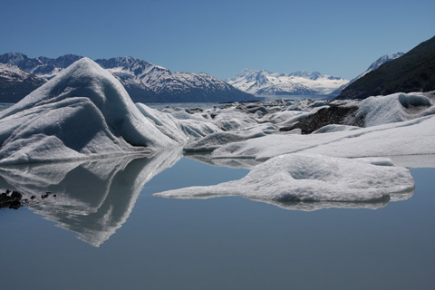

Glacier Blue Frosting

~ raw, vegan, gluten-free ~
When we think of blue foods we…. wait a minute, I don’t really ever think of blue foods… do you? A few days ago I started to create an Igloo cake and got to thinking that a blue frosting would be cool (pun intended). It would represent the chill of an igloo, but I wasn’t quite sure where to turn.
I sat at the island in the kitchen, my head resting in my hand, my other hand tapping out some song on the countertop… blue, blue… what blue food is there that I can juice? Maybe I could use… hmm, nope that is purple… or how about… nope… purple… darn, I don’t think that there is a blue food.
Blueberries were the closest I could get to blue in my thoughts… I mean the name itself has the word blue it in. So, I grabbed a packet of blueberries out of the freezer that I had put up last summer. I thawed them, popped them in the blender to puree them, then pressed the juice through a nut bag. Purple! I guess I knew this was going to be the case, and I was just living in denial. :)
I knew that I couldn’t mix two colors together to make blue since it is a primary color… so I caved and turned to Google. Site after site after site… spoke about adding baking soda to either red cabbage juice or blueberry juice, both of which were to be boiled. But I couldn’t find any ratios or if it worked differently with raw ingredients rather than the standard sugared frostings.
So, I grabbed my raw white frosting, my juiced blueberries, and a box of baking soda and went to work. It took a while to get the right ratio, but I nailed the glacier blue that I was hoping for.

In my research for creating a natural blue food dye I found out that the U.S. Food and Drug Administration (FDA) has approved; Blue No. 1 and Blue No. 2. So what are they made from? “Blue No. 1 is called “brilliant blue” and, as is typical of modern dyes, was originally derived from coal tar, although most manufacturers now make it from an oil base. Blue No. 2, or “indigotine,” on the other hand, is a synthetic version of the plant-based indigo that has a long history as a textile dye. (source)
The picture to the left was my inspiration. Glacier blue! I took this on the day of our wedding.
Yields 2 1/2 cups
- 1 cup cashews, soaked 2+ hours
- 1 cup thick coconut milk, fresh or canned
- 1/4 cup maple syrup
- 1 Tbsp vanilla extract
- 1/8 tsp sea salt
- 1/2 cup cold-pressed coconut oil, melted
- 1 Tbsp sunflower lecithin powder
- 1/4 cup blueberry juice
- 3/4 tsp baking soda (not raw)
Preparation:
White frosting base:
- After soaking the cashews, drain and rinse them well. Set aside.
- In a high-speed blender combine in order; coconut milk, maple syrup, vanilla, salt, and cashews.
- By placing the liquids in first, it helps the blades spin more easily.
- Blend until creamy, and you don’t feel any grit in the frosting.
- Depending on the blender, this may take anywhere from 1-5 minutes.
- While the blender is running and a vortex is in motion, drizzle in the coconut oil. Make sure that it gets well incorporated.
- Now add the lecithin and process just until mixed in.
- Place the frosting in an airtight container and place in the fridge while you create the blueberry juice.
Glacier blue coloring:
- To make the blueberry juice take 1 cup organic blueberries (I used frozen which were thawed) and place them in the blender, processing until the berries are completely broken down.
- Pour the blueberry puree into a nut bag and hand-squeeze the juice out. It will be very thick and concentrated.
- Measure out 1/4 cup of the juice into a separate bowl. Add the baking soda and whisk together. At first, you will see a bunch of little bubbles after mixing it. Let the bubbles settle down for about 2 minutes before adding the mixture to the frosting.
- Hand whisk the blueberry slurry into the frosting. Mine seemed to darken just a tad more after sitting for a while.
- Return to the fridge to firm up if need be before frosting your dessert (or eating with a spoon).
- Frosting should last 3-5 days in the fridge.
Additional Cake Tips:
- How to frost a cake. Click here.
- How to slice a cake. Click here.
- How much frosting is needed for a cake? Click here.
© AmieSue.com